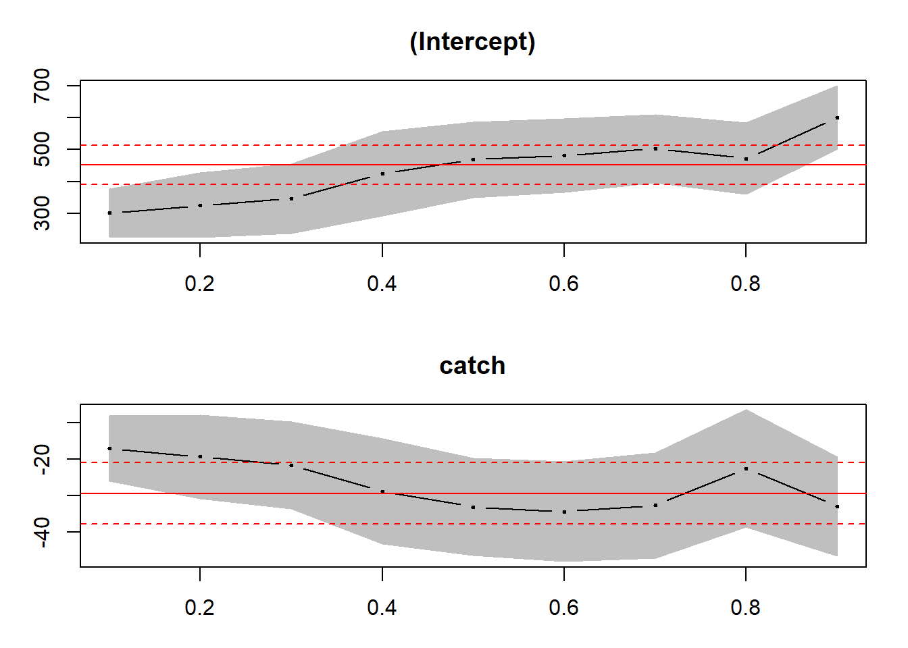

Chapter 16 Quantile regression
16.1 What is it?
When we think “regression” we usually think of linear regression where we estimate parameters based on the mean of the dependent variable. This mean is conditional on the various levels of the independent variables. what we are doing is explaining the variability of the dependent variable around its arithmetic mean. But we all know that this will only work if that mean is truly indicative of the central value of the dependent variable. What if it isn’t? What if the distribution of the dependent variable has lots of skewness, and thick (or very thin) tails?
What if we do not have to use the mean? What if we can use other measures of position in the distribution of the dependent variable? We can and we will. These other positions are called quantiles. They measure the fraction of observations of the dependent variable less than the quantile position. Even more, we can measure the deviations of a variable around the quantile conditional on a meaningful list of independent explanatory variables.
But we don’t have to always estimate the conditional mean. We could estimate the median, or the 0.25 quantile, or the 0.90 quantile. That’s where quantile regression comes in. The math under the hood is a little different, but the interpretation is basically the same. In the end we have regression coefficients that estimate an independent variable’s effect on a specified quantile of our dependent variable.6
16.2 An example
Here is a motivating “toy” example. Below we generate data with non-constant variance then plot the data using the ggplot2 package:
What do we observe from this scatter plot? We see the relationship of the dependent variable y gets more and more dispersed in its relationship (conditional) with the independent variable x, a well-known condition called heteroskedasticity. This condition fundamentally violates even the weaker of assumptions around the ordinary least squares (OLS) regression model.
Our errors are normally distributed, but the variance depends on x. OLS regression in this scenario is of limited value. It is true that the estimated mean of y conditional on x is unbiased and as good an estimate of the mean as we could hope to get, but it doesn’t tell us much about the relationship between x and y, especially as x gets larger. Let’s build a plot of the confidence interval for predicted mean values of y using just OLS. The geom_smooth() function regresses y on x, plots the fitted line and adds a confidence interval.

we immediately are taken aback by the incredibly small confidence interval relative to all of the rest of the scatter dots of data! But small x does seem to predict y fairly well. What about mid and higher levels of the relationship between y and x? There’s much more at work here.
16.3 Even in ggplot2
Just like we used geom_smooth() to get the OLS line (through the lm method), we can use geom_quantile()' to build a similar line that estimates intercept (b_0) and slope (b_1) of a line that runs not through the arithmetic mean ofybut through a quantile ofy` instead.
Let’s try the 1 in 10 quantile of 90/%. We will look at how x explains deviation of y around the 0.90 quantile of y instead of the mean of y.
Here a lot of the relationship between y and x is captured at the higher end of the y distribution.
16.4 Interpretations
Let’s use the quantreg package to gain further insight and inference into our toy model. The variable taus captures a range of quantiles in steps of 0.10. The rq function is the quantile regression replacement for the OLS lm function. We display results using summary() with the boot option to calculate standard errors se.
##
## Call: rq(formula = y ~ x, tau = taus, data = dat)
##
## tau: [1] 0.1
##
## Coefficients:
## Value Std. Error t value Pr(>|t|)
## (Intercept) 5.64945 0.28611 19.74578 0.00000
## x 0.04709 0.01016 4.63701 0.00001
##
## Call: rq(formula = y ~ x, tau = taus, data = dat)
##
## tau: [1] 0.2
##
## Coefficients:
## Value Std. Error t value Pr(>|t|)
## (Intercept) 5.97913 0.32572 18.35639 0.00000
## x 0.05746 0.01305 4.40299 0.00003
##
## Call: rq(formula = y ~ x, tau = taus, data = dat)
##
## tau: [1] 0.3
##
## Coefficients:
## Value Std. Error t value Pr(>|t|)
## (Intercept) 5.9515 0.2962 20.0913 0.0000
## x 0.0786 0.0142 5.5294 0.0000
##
## Call: rq(formula = y ~ x, tau = taus, data = dat)
##
## tau: [1] 0.4
##
## Coefficients:
## Value Std. Error t value Pr(>|t|)
## (Intercept) 5.94874 0.20228 29.40835 0.00000
## x 0.09721 0.00902 10.78267 0.00000
##
## Call: rq(formula = y ~ x, tau = taus, data = dat)
##
## tau: [1] 0.5
##
## Coefficients:
## Value Std. Error t value Pr(>|t|)
## (Intercept) 6.02747 0.22854 26.37370 0.00000
## x 0.10324 0.00712 14.49712 0.00000
##
## Call: rq(formula = y ~ x, tau = taus, data = dat)
##
## tau: [1] 0.6
##
## Coefficients:
## Value Std. Error t value Pr(>|t|)
## (Intercept) 6.19363 0.19201 32.25680 0.00000
## x 0.11185 0.00735 15.22189 0.00000
##
## Call: rq(formula = y ~ x, tau = taus, data = dat)
##
## tau: [1] 0.7
##
## Coefficients:
## Value Std. Error t value Pr(>|t|)
## (Intercept) 6.17927 0.23250 26.57723 0.00000
## x 0.12714 0.00893 14.23928 0.00000
##
## Call: rq(formula = y ~ x, tau = taus, data = dat)
##
## tau: [1] 0.8
##
## Coefficients:
## Value Std. Error t value Pr(>|t|)
## (Intercept) 6.3705 0.2290 27.8177 0.0000
## x 0.1321 0.0059 22.3813 0.0000
##
## Call: rq(formula = y ~ x, tau = taus, data = dat)
##
## tau: [1] 0.9
##
## Coefficients:
## Value Std. Error t value Pr(>|t|)
## (Intercept) 6.5197 0.3102 21.0175 0.0000
## x 0.1446 0.0123 11.7931 0.0000The intercepts and slopes change with the quantiles. We can depict these changes in this plot.
We now have a distribution of intercepts and slopes that more completely describe the relationship between y and x. The t-stats and p-values indicate a rejection of the null hypotheses that b_0 = 0 or that b_1 = 0.
The quantreg package includes a plot method to visualize the change in quantile coefficients along with their confidence intervals. We use the parm argument to indicate we only want to see the slope (or intercept) coefficients.
Each dot is the slope coefficient for the quantile indicated on the x axis with a line connecting them. The red lines are the least squares estimate and its confidence interval. The lower and upper quantiles well exceed the OLS estimate.
Let’s compare this whole situation of non-constant variance errors with data that has both normal errors and constant variance. Then let’s run quantile regression.
The fit looks good for and OLS version of the “truth.” All of the quantile slopes are within the OLS confidence interval of the OLS slope. Nice. However, the quantile estimates of confidence intervals are far outside the OLS (“red”) bounds. This might lead us to question OLS inference in general.
16.5 Exercises
Repeat the forecast confidence intervals for disposable income equal to 15, 20, 25. What do you observe about the width of the interval as the forecast increases?
Test the hypothesis that the population marginal propensity to consume out of disposable income is no different than zero with a probability of type II error equal to 95%.
Using the following data sets to compute all regression estimates, standard deviations, a forecast confidence interval for a forecasted independent variable observation, confidence intervals and hypothesis testing for each of the estimators, and \(R^2\) and \(F\) hypothesis testing for the overall model. For each data set and model extract the error terms and review the percentiles, mean, standard deviation, skewness, and kurtosis. Do they look like they were drawn from a normal distribution? Test this claim using quantile regression. Plot the quantile estimates against quantiles with confidence intervals. If the quantile confidence intervals are wider than the OLS confidence intervals, the OLS hypothesis testing might be suspect! Show all work. Interpret your findings.
- Peruvian anchovies
- Bronx corn
- US House of Representatives
16.5.1 US House of Representatives seats and unemployment
data <- read.csv("data/unemployment-seats.csv")
#str(data)
lm_fit <- lm(unemployment ~ house.seats, data)
summary(lm_fit)##
## Call:
## lm(formula = unemployment ~ house.seats, data = data)
##
## Residuals:
## Min 1Q Median 3Q Max
## -3.579 -2.264 -1.180 0.065 14.325
##
## Coefficients:
## Estimate Std. Error t value Pr(>|t|)
## (Intercept) 6.95447 1.28079 5.43 0.0000096 ***
## house.seats 0.00697 0.08259 0.08 0.93
## ---
## Signif. codes:
## 0 '***' 0.001 '**' 0.01 '*' 0.05 '.' 0.1 ' ' 1
##
## Residual standard error: 4.13 on 27 degrees of freedom
## Multiple R-squared: 0.000264, Adjusted R-squared: -0.0368
## F-statistic: 0.00712 on 1 and 27 DF, p-value: 0.93316.5.2 Peruvian anchovies
data <- read.csv("data/peruvian_anchovies.csv")
#str(data_peru)
lm_fit <- lm(price ~ catch, data)
summary(lm_fit)##
## Call:
## lm(formula = price ~ catch, data = data)
##
## Residuals:
## Min 1Q Median 3Q Max
## -110.0 -38.3 -19.0 34.6 142.3
##
## Coefficients:
## Estimate Std. Error t value Pr(>|t|)
## (Intercept) 451.99 36.79 12.28 0.000000037
## catch -29.39 5.09 -5.78 0.000087664
##
## (Intercept) ***
## catch ***
## ---
## Signif. codes:
## 0 '***' 0.001 '**' 0.01 '*' 0.05 '.' 0.1 ' ' 1
##
## Residual standard error: 71.6 on 12 degrees of freedom
## Multiple R-squared: 0.736, Adjusted R-squared: 0.714
## F-statistic: 33.4 on 1 and 12 DF, p-value: 0.0000877rq_fit <- rq(price ~ catch, data, tau = taus)
rq_plot <- summary(rq_fit, se = "boot")
plot(rq_plot) #, xlim=c(0.001,10), ylim=c(0.001,10))
16.5.3 Bronx corn
data <- read.csv("data/corn_bronx.csv")
#str(data)
lm_fit <- lm(corn ~ fertilizer, data)
summary(lm_fit)##
## Call:
## lm(formula = corn ~ fertilizer, data = data)
##
## Residuals:
## 1 2 3 4 5 6 7
## 2.839 -2.375 -1.679 -3.589 1.107 3.804 -0.107
##
## Coefficients:
## Estimate Std. Error t value Pr(>|t|)
## (Intercept) 27.250 3.057 8.91 0.0003 ***
## fertilizer 1.652 0.142 11.64 0.000082 ***
## ---
## Signif. codes:
## 0 '***' 0.001 '**' 0.01 '*' 0.05 '.' 0.1 ' ' 1
##
## Residual standard error: 3 on 5 degrees of freedom
## Multiple R-squared: 0.964, Adjusted R-squared: 0.957
## F-statistic: 135 on 1 and 5 DF, p-value: 0.0000822rq_fit <- rq(corn ~ fertilizer, data, tau = taus)
rq_plot <- summary(rq_fit, se = "boot")
plot(rq_plot)
16.5.4 Consumption and disposable income
data_cdi <- read.csv("data/consumption_income.csv")
#str(data_cdi)
lm_fit <- lm(consumption ~ income, data_cdi)
summary(lm_fit)##
## Call:
## lm(formula = consumption ~ income, data = data_cdi)
##
## Residuals:
## Min 1Q Median 3Q Max
## -0.04821 -0.02181 -0.00425 0.00626 0.08556
##
## Coefficients:
## Estimate Std. Error t value Pr(>|t|)
## (Intercept) 0.136 1.704 0.08 0.94
## income 0.918 0.134 6.85 0.000045 ***
## ---
## Signif. codes:
## 0 '***' 0.001 '**' 0.01 '*' 0.05 '.' 0.1 ' ' 1
##
## Residual standard error: 0.0416 on 10 degrees of freedom
## Multiple R-squared: 0.824, Adjusted R-squared: 0.807
## F-statistic: 46.9 on 1 and 10 DF, p-value: 0.0000446#str(data_cdi)
# log-log fit for elasticity estimation
lm_fit <- lm(log(consumption) ~ log(income), data_cdi)
lm_summary <- summary(lm_fit)
lm_summary##
## Call:
## lm(formula = log(consumption) ~ log(income), data = data_cdi)
##
## Residuals:
## Min 1Q Median 3Q Max
## -0.004128 -0.001829 -0.000358 0.000542 0.007187
##
## Coefficients:
## Estimate Std. Error t value Pr(>|t|)
## (Intercept) -0.0411 0.3661 -0.11 0.91
## log(income) 0.9871 0.1440 6.86 0.000044 ***
## ---
## Signif. codes:
## 0 '***' 0.001 '**' 0.01 '*' 0.05 '.' 0.1 ' ' 1
##
## Residual standard error: 0.00352 on 10 degrees of freedom
## Multiple R-squared: 0.825, Adjusted R-squared: 0.807
## F-statistic: 47 on 1 and 10 DF, p-value: 0.0000443Is the slope estimate no different than 1? That is, is the elasticity of consumption with respect to disposable income unitary so that a 10% change in income will probably produce a 10% change in consumption?
## H_0: \beta_1 = 1 <=> \beta_1 - 1 = 0
b_1 <- lm_fit$coefficients[2] ## extract slope estimate
s_b1 <- coef(lm_summary)[,2][2] ## extract slope estimate standard error
t_score <- (b_1 - 1) / s_b1
pr_t <- 1-pt(t_score,nrow(data_cdi)-2)
t_score## log(income)
## -0.0894## log(income)
## "Accept $H_0: \beta_1 = 1$"Yes, a 10% change in income will probably produce a 10% in consumption in this sample.